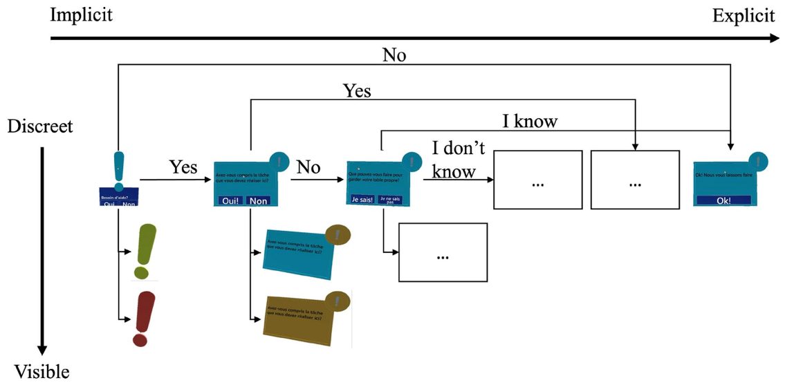

Période et lieu: 2022-2025 - Doctorat, Université de Sherbrooke, QC, Canada. Technologies: Microsoft HoloLens 2. Langages de programmation: C# (avec Unity et Visual Studio). Méthodes UX: Sessions de remue-méninges, évaluations expertes, tests d'utilisabilité (questionnaires CSUQ, AttrakDiff et Nasa-TLX; entretiens analysés qualitativement). Plus d'informations: Article publié dans un journal en interaction humain-machine, revue par les pairs, classé Q1 (IF: 5.4) Code
Contexte Nous partons du constat que les troubles neurocognitifs affectent précocement les fonctions exécutives, essentielles à la réalisation des activités instrumentales de la vie quotidienne et au maintien à domicile. Bien que certaines technologies d’assistance cognitive existent, aucune ne combinait jusqu’à présent réalité mixte immersive, assistance graduée et principes de « zero-effort technology » pour soutenir les fonctions exécutives.
Objectif Nous avons développé MATCH (Mixed reAliTy Cognitive ortHosis), une technologie d’assistance cognitive en réalité mixte destinée à soutenir les personnes âgées présentant des dysfonctions exécutives. Notre objectif était d’évaluer son utilité, son utilisabilité et la charge cognitive qu’elle génère lors de la réalisation d’une activité de la vie quotidienne.

Méthodes Nous avons conçu MATCH autour d’une architecture contextuelle capable d’adapter automatiquement l’assistance fournie grâce à un système d’indices gradués allant d’aides implicites à explicites. Une étude a été réalisée auprès de 12 personnes âgées vivant à domicile, avec ou sans trouble neurocognitif léger, à l’aide d’un casque Microsoft HoloLens 2 dans un appartement intelligent. L’évaluation reposait sur des mesures de performance, des questionnaires standardisés (AttrakDiff, CSUQ, NASA-TLX) et une analyse qualitative thématique des commentaires spontanés des participants.
Résultats Nous avons observé que MATCH guidait de façon autonome presque tous les participants, adaptait l’assistance à leurs comportements et était perçu comme utile, stimulant et globalement utilisable, tout en maintenant une faible charge cognitive. Les participants ont néanmoins souligné certaines pistes d’amélioration, notamment concernant la perception de certaines aides visuelles, la formulation des messages et la personnalisation de l’assistance.